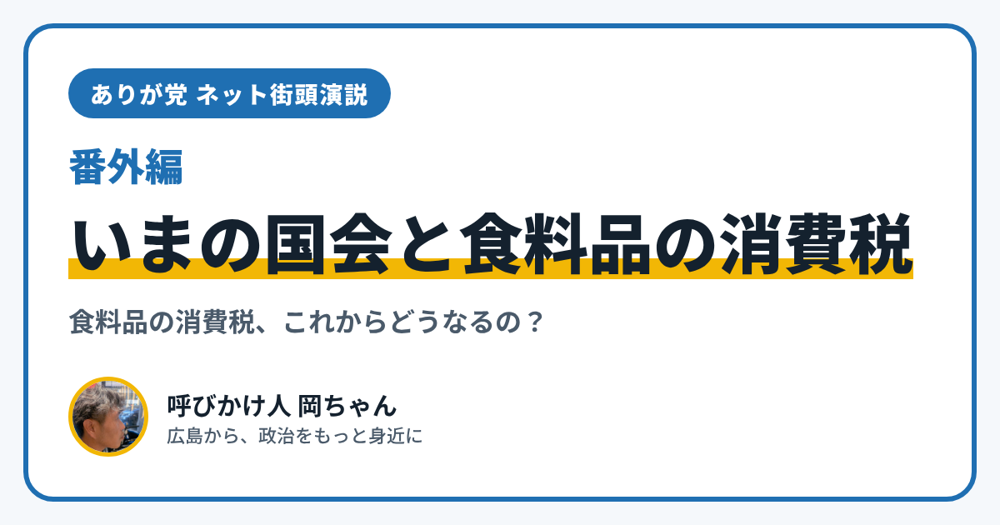

ありが党 ネット街頭演説 番外編｜いまの国会で話し合われている「食料品の消費税」

こんにちは、ありが党の呼びかけ人、岡ちゃんです。今日のネット街頭演説（番外編）は、「いまの政治で、何が起きているの？」というお話です。
いまの国会でいちばん大きな話題を、なるべくやさしい言葉でまとめてみます。
食料品の消費税を「1%」にする法案
いま、国会（臨時国会）がひらかれています。10月5日に始まり、12月12日まで話し合いが続く予定です。
いちばんの話題は、政府が出した「食料品の消費税を下げる法案」です。
- 食べ物や飲み物の消費税を、いまの8%から1%に下げます
- 期間は、2027年4月から2年間だけです。そのあとは8%に戻る予定です
- 残りの1%分は、所得が中くらい・低めの人に、お金を配る形でおぎなうとしています（「就業者負担軽減支援金」）。だれが、いくらもらえるかは、これから決めるそうです
もし決まれば、1989年に消費税が始まってから、はじめて税率が下がることになります。
いまは「参議院」で話し合い中
法律ができるまでには、衆議院と参議院の2つで「賛成」が多くなる必要があります。
この法案は、11月6日に衆議院で賛成が多く、通りました。いまは参議院で話し合われています。参議院では、政府を支える党（与党）の議員が半分より少ないため、ほかの党の考えも、結果に大きく関わります。
分かれている意見
この法案には、いろいろな意見があります。
- 「物の値段が上がって苦しい暮らしを、早く助けたい」という声
- 「2年間で約10兆円の税収がへる。その分のお金をどこから出すのか、まだはっきりしない」という心配
- 「お金を配るしくみの中身（だれに、いくら）が、まだ決まっていない」という指摘
どの意見にも、暮らしを心配する気持ちがあると、僕は思います。
僕が考えたいこと
僕は、法案に賛成か反対かを決める前に、「決まったあと、本当に困っている人に助けが届くのか」を、しっかり見ていきたいと思っています。
政治は遠く感じても、毎日の買い物とつながっています。いっしょに知っていけたらうれしいです。
あなたは、この消費税の話、どう思いますか？ 「ここがよくわからない」という質問も大歓迎です。InstagramのDM（@ayu19841002）や、ありが党のページから、あなたの声を聞かせてください。
※この記事は、2026年11月13日時点のニュース（NHK、共同通信など）をもとに書いています。参議院での話し合いによって、中身が変わることがあります。